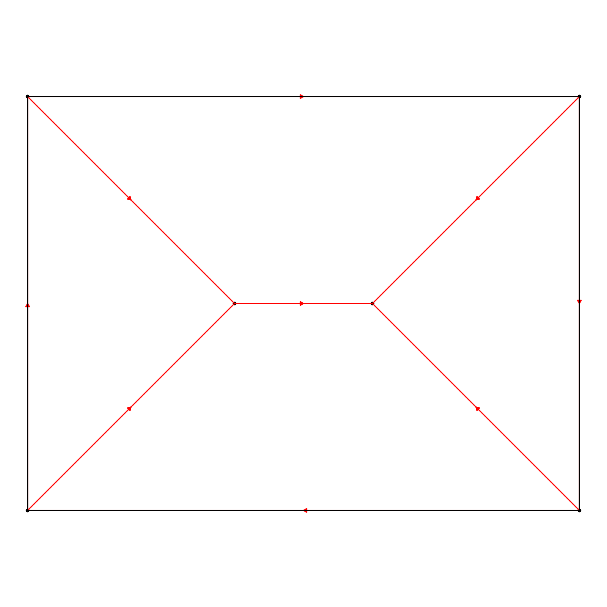
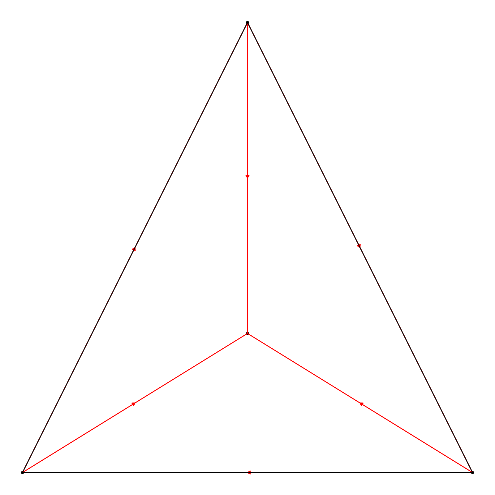
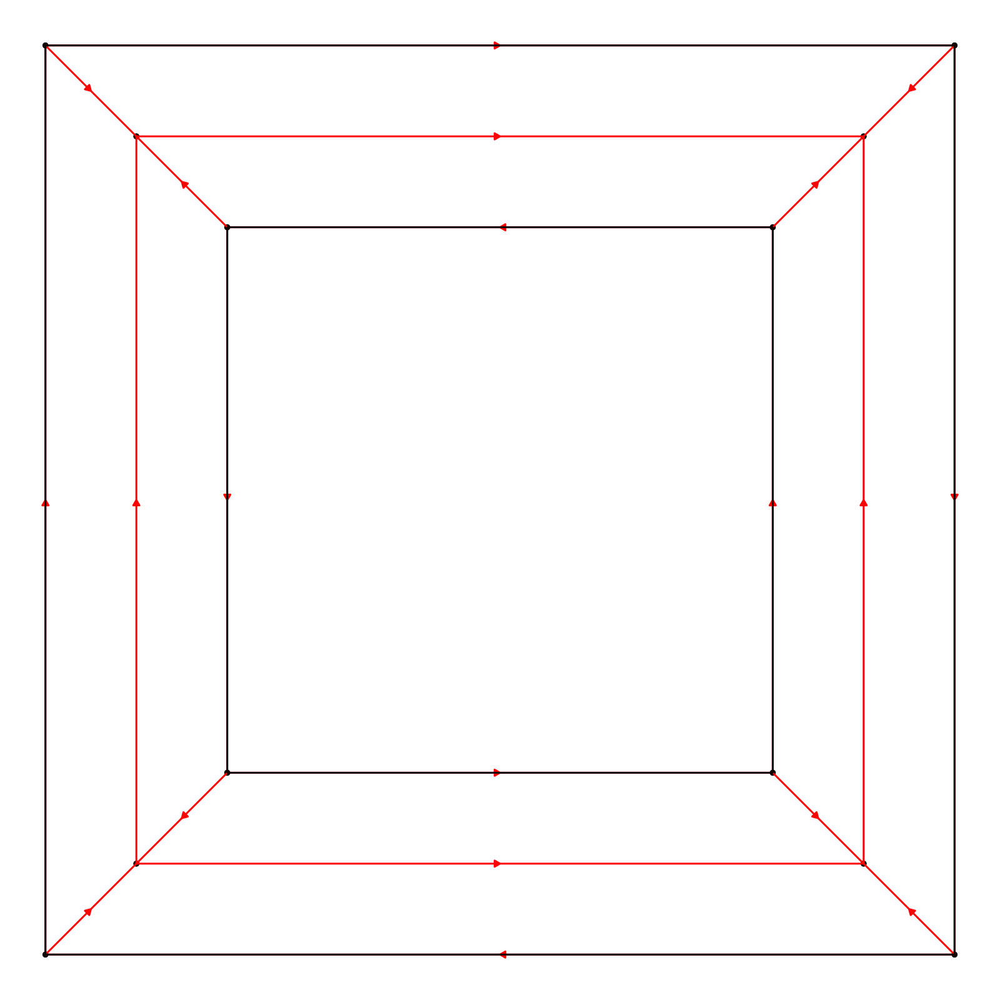
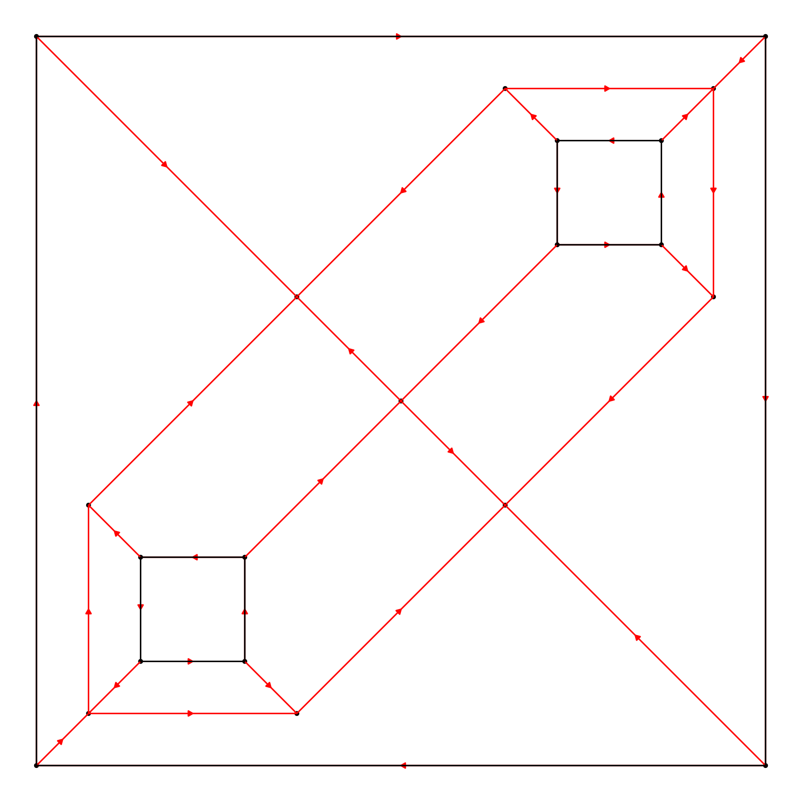
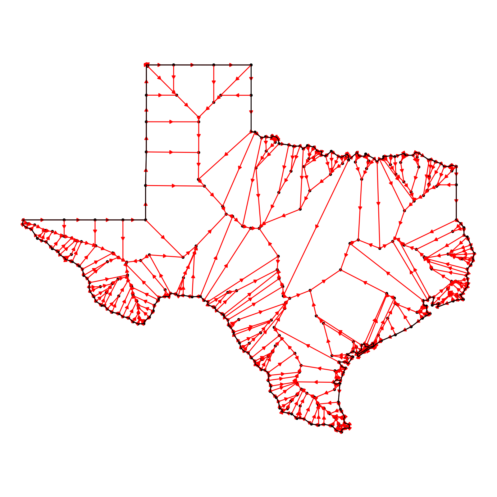

This function generates a straight skeleton of a polygon, based on a set of vertices and holes. It uses the CGAL library to create the straight skeleton using exact arithmetic, and then parses that file into a more manageable format.
Usage
skeletonize(
vertices,
holes = list(),
debug = FALSE,
merge_nodes_tolerance = 1e-05,
return_raw_ss = FALSE,
progress = TRUE
)Arguments
- vertices
Default `NULL`. A matrix of x and y coordinates representing the vertices of the polygon in counter-clockwise (CCW) order.
- holes
Default `list()`. A list of matrices, each representing a hole in the polygon with x and y coordinates in clockwise (CW) order.
- debug
Default `FALSE`. A logical flag that controls whether debugging information should be printed.
- merge_nodes_tolerance
Default `1e-5`. A numeric value specifying the tolerance level for merging nodes. It should be a value between 0 and 1. This value species the size of the grid that the nodes are snapped to determining identical nodes.
- return_raw_ss
Default `FALSE`. A logical flag that controls whether the raw straight skeleton should be returned.
- progress
Default `TRUE`. A logical flag that controls whether a progress bar should be displayed while skeletonizing.
Value
If `return_raw_ss` is FALSE, a list with two data frames, 'nodes' and 'links', which represent the nodes and edges of the straight skeleton, respectively. If `return_raw_ss` is TRUE, a data frame representing the raw straight skeleton is returned. If the polygon is not simple, a warning is issued and NULL is returned.
Examples
# Example 1: Simple rectangle polygon with no holes
vertices1 = matrix(c(0,0, 4,0, 4,3, 0,3, 0,0), ncol = 2, byrow = TRUE)
skeleton1 = skeletonize(vertices1)
plot_skeleton(skeleton1)

# Example 2: Triangle polygon with no holes
vertices2 = matrix(c(0,0, 2,0, 1,2, 0,0), ncol = 2, byrow = TRUE)
skeleton2 = skeletonize(vertices2)
plot_skeleton(skeleton2)

# Example 3: Polygon with a hole
# Outer polygon
vertices3 = matrix(c(0,0, 5,0, 5,5, 0,5, 0,0), ncol = 2, byrow = TRUE)
# Hole inside the polygon
hole3 = matrix(c(1,1, 4,1, 4,4, 1,4, 1,1), ncol = 2, byrow = TRUE)[5:1,]
skeleton3 = skeletonize(vertices3, holes = list(hole3))
plot_skeleton(skeleton3)

# Example 4: Polygon with multiple holes
# Outer polygon
vertices4 = matrix(c(0,0, 7,0, 7,7, 0,7, 0,0), ncol = 2, byrow = TRUE)
# Holes inside the polygon
hole4_1 = matrix(c(1,1, 2,1, 2,2, 1,2, 1,1), ncol = 2, byrow = TRUE)[5:1,]
hole4_2 = matrix(c(5,5, 6,5, 6,6, 5,6, 5,5), ncol = 2, byrow = TRUE)[5:1,]
skeleton4 = skeletonize(vertices4, holes = list(hole4_1, hole4_2))
plot_skeleton(skeleton4)

# Example 5: Using debug and returning raw straight skeleton
vertices5 = matrix(c(0,0, 3,0, 3,3, 0,3, 0,0), ncol = 2, byrow = TRUE)
raw_skeleton5 = skeletonize(vertices5, debug = TRUE, return_raw_ss = TRUE)
# Skeletonize and plot an {sf} object
if(length(find.package("spData",quiet = TRUE)) > 0) {
us_states = spData::us_states
texas = us_states[us_states$NAME == "Texas",]
plot_skeleton(skeletonize(texas))
}
